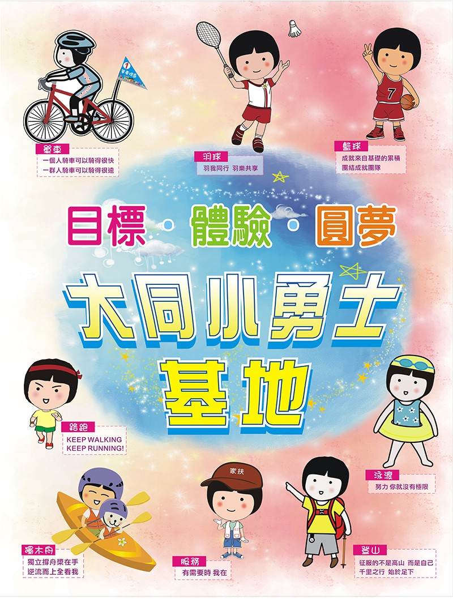
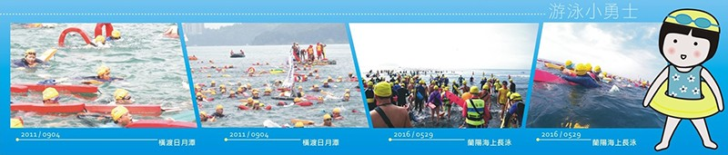
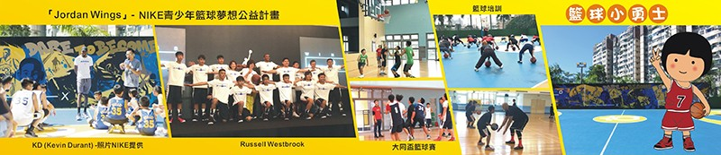
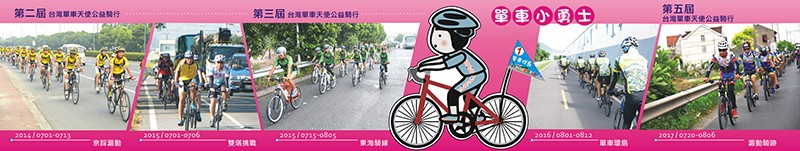
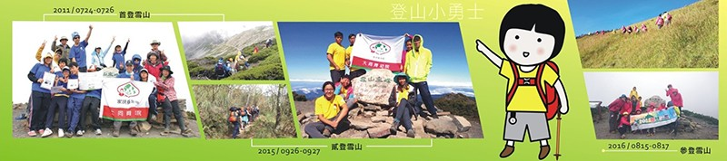

為鼓勵兒少發揮積極向上精神，努力學習發展並克服逆境，以目標、體驗、圓夢為核心元素，透過攀登百嶽、游泳橫渡、單車挑戰、遠距路跑及籃球培力及國際服務，再合併志願服務之參與，從設定目標、努力負責到實踐夢想，展現對各項人事物之人文關懷，激發未來克服各種難關的潛能。 目標.體驗.圓夢是本院培養院童成長的核心理念，大同小勇士方案操作是實踐此核心理念的行動策略，從2011年的極星圓夢挑戰的創新方案開展之際，建構了『目標‧體驗‧圓夢』的院童能力培育之核心理念，希望能讓生活在大同的孩子們有目標、有重心，也從自我負責的概念中參與投入，最後達到夢想實現的境界。 2011年成功挑戰攀登雪山及橫渡日月潭，2012年7月制定『大同小勇士』獎章申請辦法，期待透過努力過程，發現自己目標及挑戰潛能，並透過志願服務的參與，以環保簡約的精神，展現對生活環境及對他人的人文關懷。小勇士的方案推動從初始只有泳渡、登山、單車三個項目，經過近十年的發展，配合自立培育及每年年底宣導訓練，建置院童設定年度目標，以作為新年度成長挑戰的動力與方向，小勇士的項目發展已增加到擁有籃球、路跑、服務、獨木舟，還有2021年度開啟推動的羽球小勇士共八個項目，每年依據孩子們的興趣需求，結合資源推動，讓孩子們自自主選擇參與，儼然成為大同安置服務發展的特色，也為大同院童成長過程中邁向夢想的實踐，提供強有力的運作推動支持。




